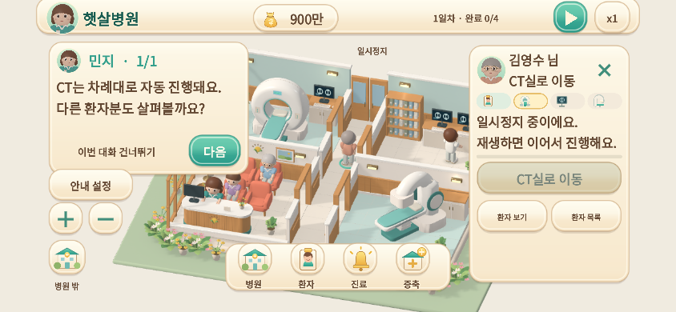
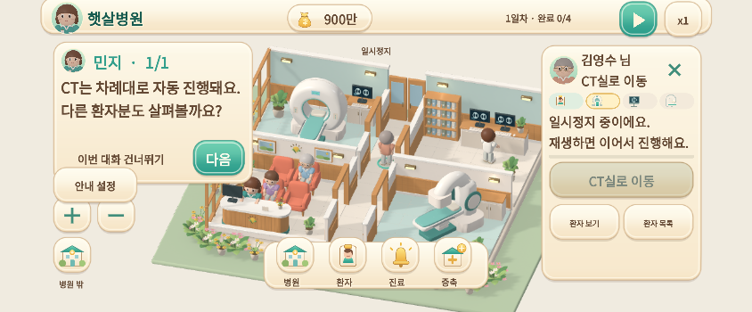
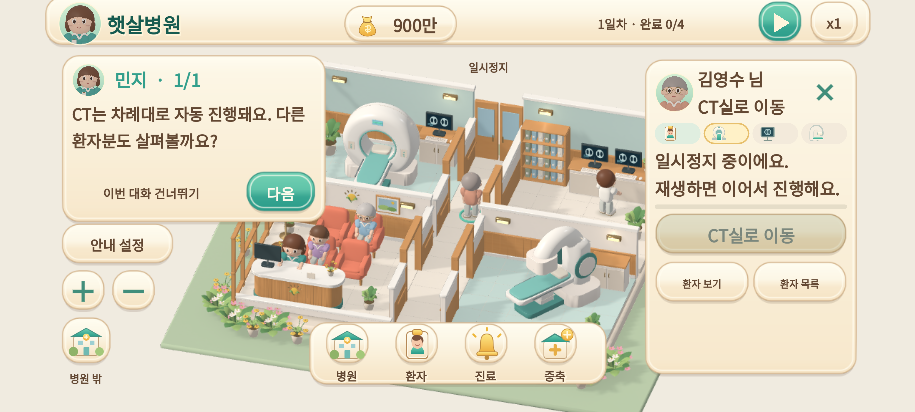
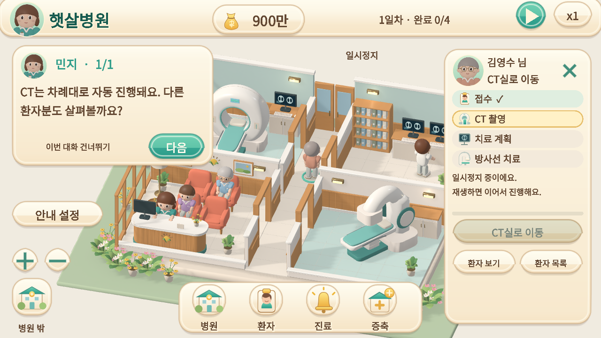
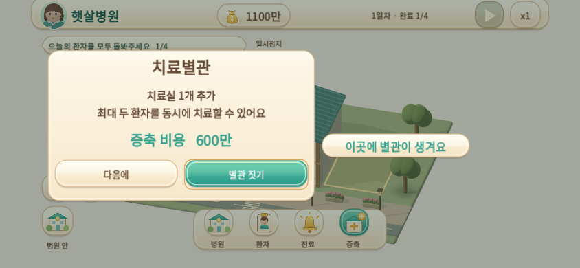
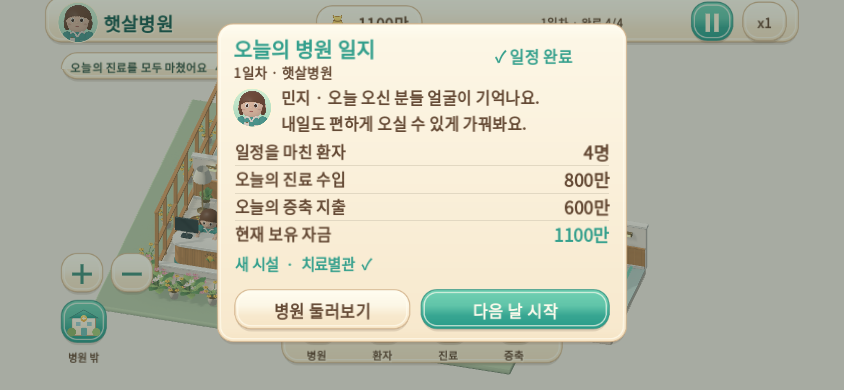

햇살병원 · 모바일 체험 0.3.0-dev
Android 개발 APK와 Mac → iPhone 웹 체험 묶음을 준비했습니다. 설치·5분 확인 순서·검증 범위 · 검사 원자료
실제 휴대폰은 아직 확인하지 않았습니다. 아래 영상은 Linux Godot, 브라우저 화면은 Chromium 터치 에뮬레이션입니다. 노치·홈 표시줄 여백은 모사한 값입니다.
환자 선택 → 접수 → CT
24초 · 자동 입력 · 게임 진행 1배속 · 844×390 · Linux 실제 3D 엔진. 녹화 24fps는 휴대폰 성능 수치가 아닙니다.
작은 화면과 안전 영역

844×390 · Chromium DPR 3 · 좌우 47 / 하단 21 CSS 픽셀 여백 모사. 사용자 일시정지 상태에서 카드·버튼을 확인.

844×350 · 주소창으로 사용 가능한 높이가 줄어드는 상황을 리사이즈로 확인.

915×412 · 터치 에뮬레이션.

1280×720 · 동일한 게임의 넓은 화면 배치.
증축과 오늘의 병원 일지

Linux Godot 844×390 · 실제 구매 확인창과 별관 예정지.

네 환자 귀가 후 실제 기록: 수입 800만 / 증축 600만 / 현재 1100만.
빌드 소스 73e24c7 · 기존 운영·화면·저장 1,474개 검사 통과. Android 설치·실행, iPhone Safari, iOS 서명 앱, 모바일 FPS·발열·배터리는 미확인입니다.